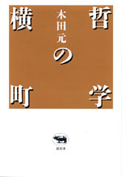
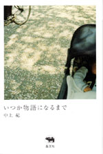
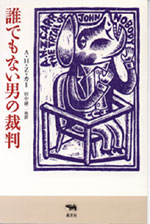
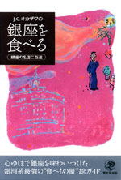
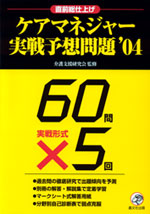

|

|
哲学・エッセイ | ||||||
| 哲学の横町 | |||||||
| 木田元 | |||||||
| 四六判 328頁 | |||||||
| 定価2310円(本体2200円） | |||||||
| 4-7949- 6623-７ C0010 | |||||||
| 哲学に横町あり。横町に哲学あり。──考える力を養うにはどうすればよいか。人はなぜ幸福を求めるのか。毎日の生活から生まれる小さな疑問から、はたまた、なぜ、ハイデガーの『存在と時間』はあれほど大きな影響力をもつことができたのか、という問いにいたるまで、哲学的思考の醍醐味を味わえる、読みごたえある最新エッセー集。 | |||||||
|
 |
エッセイ | ||||||
| いつか物語になるまで | |||||||
| 中上紀 | |||||||
| 四六判 208頁 | |||||||
| 定価1680円（本体1600円） | |||||||
| 4-7949-6624-5 C0095 | |||||||
| 嘘と物語の区別もつかない年頃から、ずっと「おはなし」を創り続けてきた。「もしそれが鮮やかな光を放つ優しい嘘なら、いつしか物語に変わり生きつづける」父・中上健次の故郷熊野の記憶、毎年のように足を運ぶアジアでの体験、海外の文学者たちとの交流の日々……さまざまな記憶の断片からあざやかな物語を紡ぎ出す、著者快心のエッセイ集。 | |||||||
 |
ミステリ |
| 晶文社ミステリ 誰でもない男の裁判 |
|
| A・H・Z・カー 田中融二訳 | |
| 四六判 336頁 | |
| 定価2520円（本体2400 円） | |
| 4-7949- 2742-8 C0397 | |
| 「もし神がいるのなら、おれを殺してみろ！」 無神論者として有名な作家が講演中に叫んだ瞬間、一発の銃弾がその胸を貫いた。信仰と現実の問題に取り組みミステリの枠を超えた衝撃をもたらす表題作、ふとしたはずみで娘の愛猫を殺してしまった牧師の苦悩を描く「黒い小猫」他、E・クイーン、山口雅也絶賛、伝説的な異色短篇の名手の傑作を集大成。 |
|
晶文社出版の本 TEL.03-5688-6881 |
|
 |
レストランガイド |
| J.C.オカザワの銀座を食べる 銀座の名店二百選 |
|
| J.C.オカザワ | |
| 四六判 256頁 | |
| 定価1890円（本体1800円） | |
| 4-7949-7627-5 C0076 | |
| 日本人が大好きな街・銀座。J.C.オカザワは、銀座の目抜き通りから1本裏にある隠れ屋のようなお店から、知られざるお値うちレストランまで食べ歩き、おすすめの200軒を紹介する。「もれた有名店」「あと一歩の店」なども含め、280軒が登場。カラー頁と2色刷り折込地図も入り、銀座を語るに「座右の書」となる“銀座食べもの屋”総ガイド。 |
 |
ケアマネジャー | |
| ケアマネジャー実戦予想問題'04 | ||
| 介護支援研究会監修 | ||
| B5判 180頁・別冊80頁 | ||
| 定価2730円（本体2600円） | ||
| 4-7949-7584-8 C0036 | ||
| 10月24日実施の介護支援専門員実務研修受講試験に向けて、総仕上げに最適の予想問題集。大好評『基本問題集』（4月刊）のスタッフによる姉妹編。過去の本試験問題を徹底分析し、難化の傾向あわせて予想した実戦形式の出題。60問×5回、300問と出題可能性のあるテーマをカバー。別冊になった解説・解答集、切り取り式の解答用紙や分野別自己診断表など独自の工夫で使いやすさ抜群。 | ||